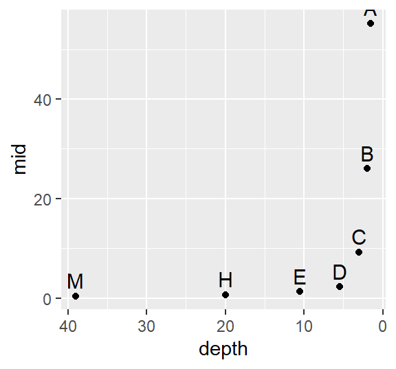
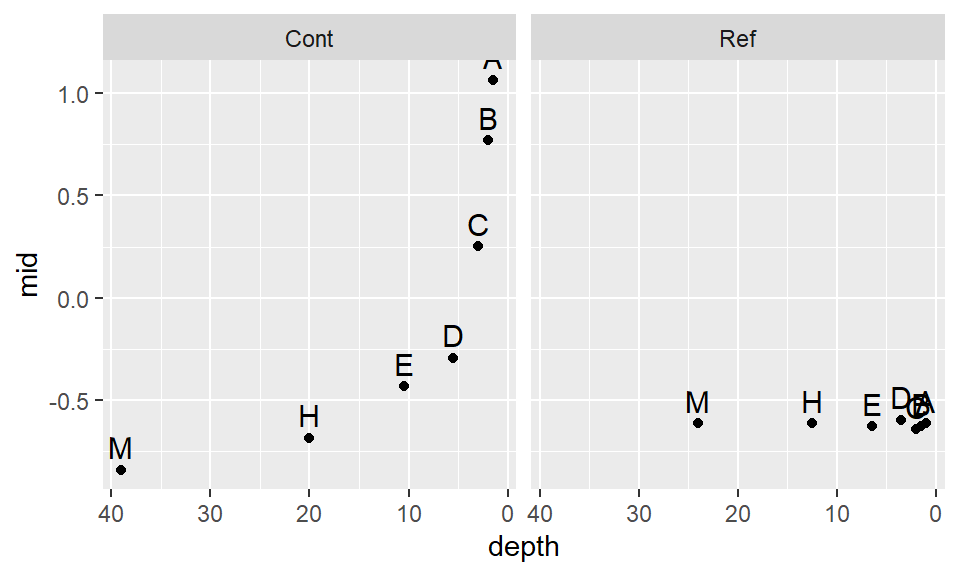
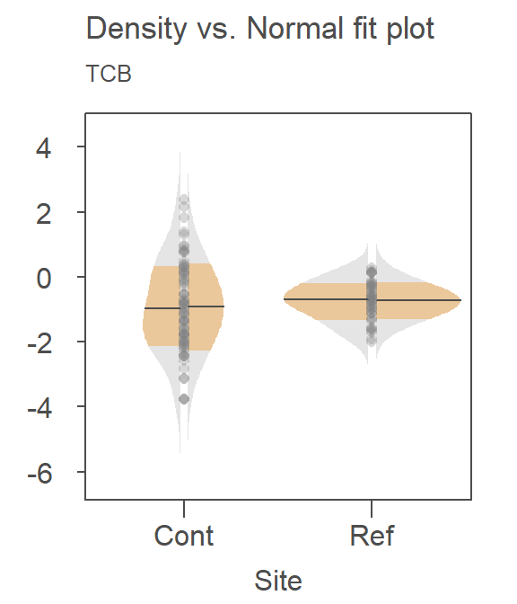

| dplyr | ggplot2 | tukeyedar |
|---|---|---|
| 1.1.4 | 3.4.4 | 0.2.1 |
23 A working example: t-tests and re-expression
23.1 Introduction
The following data represent 1,2,3,4-tetrachlorobenzene (TCB) concentrations (in units of ppb) for two site locations: a reference site free of external contaminants and a contaminated site that went through remediation (dataset from Millard et al., p. 416-417).
# Create the two data objects (TCB concentrations for reference and contaminated sites)
Ref <- c(0.22,0.23,0.26,0.27,0.28,0.28,0.29,0.33,0.34,0.35,0.38,0.39,
0.39,0.42,0.42,0.43,0.45,0.46,0.48,0.5,0.5,0.51,0.52,0.54,
0.56,0.56,0.57,0.57,0.6,0.62,0.63,0.67,0.69,0.72,0.74,0.76,
0.79,0.81,0.82,0.84,0.89,1.11,1.13,1.14,1.14,1.2,1.33)
Cont <- c(0.09,0.09,0.09,0.12,0.12,0.14,0.16,0.17,0.17,0.17,0.18,0.19,
0.2,0.2,0.21,0.21,0.22,0.22,0.22,0.23,0.24,0.25,0.25,0.25,
0.25,0.26,0.28,0.28,0.29,0.31,0.33,0.33,0.33,0.34,0.37,0.38,
0.39,0.4,0.43,0.43,0.47,0.48,0.48,0.49,0.51,0.51,0.54,0.6,
0.61,0.62,0.75,0.82,0.85,0.92,0.94,1.05,1.1,1.1,1.19,1.22,
1.33,1.39,1.39,1.52,1.53,1.73,2.35,2.46,2.59,2.61,3.06,3.29,
5.56,6.61,18.4,51.97,168.64)
# We'll create a long-form version of the data for use with some of the functions
# in this exercise
df <- data.frame( Site = c(rep("Cont",length(Cont) ), rep("Ref",length(Ref) ) ),
TCB = c(Cont, Ref ) )Our goal is to assess if, overall, the concentrations of TCB at the contaminated site are different from those of the reference site with the alternative being that the contaminated site has concentrations greater than those at the reference site.
23.2 A typical statistical approach: the two sample t-Test
We are interested in answering the question: “Did the cleanup at the contaminated site reduce the concentration of TCB down to background (reference) levels?”. If the question being addressed is part of a decision making process such as “Should we continue with the remediation?” we might want to assess if the difference in TCBs between both sites is “significant” enough to conclude that the TCBs are higher than would be expected if chance alone was the process at play.
A popular statistical procedure used to help address this question is the two sample t-Test. The test is used to assess whether or not the mean concentration between both batches of values are significantly different from one another. The test can be framed in one of three ways: We can see if the batches are similar, if one batch is greater than the other batch, or if one batch is smaller than the other batch. In our case, we will assess if the Cont batch is greater than the Ref batch (this is the alternative hypothesis). We’ll make use of the t.test function and set the parameter alt to "greater".
t.test(Cont, Ref, alt="greater")
Welch Two Sample t-test
data: Cont and Ref
t = 1.4538, df = 76.05, p-value = 0.07506
alternative hypothesis: true difference in means is greater than 0
95 percent confidence interval:
-0.4821023 Inf
sample estimates:
mean of x mean of y
3.9151948 0.5985106 The test suggests that there is just a small chance (a 7.5% chance) that the reference site could have generated mean concentrations as great as those found at the contaminated site. The test also outputs the means of each batch: 3.9 ppb for the contaminated site and 0.6 ppb for the reference site.
Many ancillary data analysts may stop here and proceed with the decision making process. This is not good practice. To see why, let’s deconstruct the t-test.
First, we need to find out how the test is characterizing the batches of numbers. The t-test characterizes the location of the batch using the mean, and the spread using the standard deviation. In essence, the test is reducing the complexity of the batches down to two numbers.
The t-test uses these numbers to reconstruct, then compare the distributions. For example, here’s how the t-test is characterizing the distribution of value for the reference site, Ref:
The right side of the plot is the fitted Normal distribution computed from the sample’s standard deviation–this is how the t-test is characterizing the Ref distribution. The left side of the plot is the density distribution showing the actual shape of the distribution. The points in between both plot halves are the actual values. Note the skew towards higher concentrations. For the Ref data, one might argue that the Normal fit is doing a reasonably good job in characterizing the distribution of values though the outliers may be exaggerating the width of the Normal distribution.
Now, let’s see how well the Normal fit characterizes the distribution of the contaminated site values, Cont.

The Normal fit is on the right. The density plot is barely noticeable on the left side of the plot! You’ll note the tight cluster of points near the center of the Normal distribution. There are just a few points that extend beyond the tight cluster. These outliers are disproportionately inflating the standard deviation which, in turn, leads to the disproportionately large Normal distribution that is adopted in the t-test.
Since the t-test adopts a Normal characterization of the spread, it would behoove us to check the assumption of normality using the normal q-q plot. Here, we’ll compare the Cont values to a Normal distribution.

This is a textbook example of a batch of values that does not conform to a Normal distribution. At least four values (which represent ~5% of the data) seem to contribute to the strong skew and to a much distorted representation of location and spread. The mean and standard deviation are not robust to extreme values. In essence, all it takes is one single outlier to heavily distort the representation of location and spread in our data. The mean and standard deviation have a breakdown point of 1/n where n is the sample size.
The median and interquartile range are less sensitive to extreme values. In fact, the median has a breakdown point of n/2. In other words, half of the values would have to be modified to alter the median.
The boxplot makes use of these robust measures of location and spread; let’s compare the batches with and without the extreme (outlier) values.

Note that because of the robust nature of the median and interquartile range, the boxplot helps us spot the outliers. In fact, the boxplot has a breakdown point of n/4 (i.e. 25% of the values must be extreme before we see any masking of extreme values). The standard deviation, on the other hand, can be inflated by one extreme value thus masking the potentially problematic values.
One observation that can also be gleaned from this plot is the skewed nature of the Cont data within the interquartile range (IQR). This suggests that even if we were to remove the outliers, the data would violate the normal distribution requirements.
But, most importantly, the boxplot seems to contradict the conclusion gleaned from the t-test. The plot suggests that the contaminated site has a lower overall concentration than that of the reference site when comparing medians instead of means!
23.3 Re-expression
If we are to use the t-test, we need to make sure that the distributional requirements are met. Even Welch’s modification has one requirement about the distribution: both spreads must follow a normal distribution. Let’s compare both batches to a normal distribution via a normal q-q plot. We’ll make use of the custom eda_qq function:
library(tukeyedar)
eda_qq(Ref, norm=TRUE)
eda_qq(Cont, norm=TRUE)These batches do not follow the straight line. This suggests skewness in the distribution (as was observed with the boxplots). A workaround to this problem is to re-express the batches of values in such a way to render them as close to normal as possible. However, in doing so, we must make sure that both batches are re-expressed in an equal way to facilitate comparison. A popular re-expression used with observational data that exhibit skewness towards higher values is the log transformation. The eda_qq function has an argument, p=, that takes as input a re-expression that will be applied to the values. The function will also allow us to choose between a Tukey (tukey=TRUE) or Box-Cox (tukey=FALSE) method. The default is set to tukey=FALSE. To apply a log transformation, we set p to 0.
eda_qq(Ref, norm=TRUE, p = 0)
eda_qq(Cont, norm=TRUE, p = 0)
The log transformed data is an improvement, but a skew in both batches is still apparent. We’ll need to explore other powers next.
23.4 Fine-tuning the re-expression
The log transformation is one of many re-expressions that can be applied to the data. Let’s explore the skewness across different “depths” of the Cont values to see if the skewness is systematic. We’ll use letter value summary plots to help guide us to a reasonable re-expression. We’ll make use of the custom eda_lsum function to generate the table and ggplot2 to generate the plot.
First, we’ll look at the raw contaminated site data:
library(ggplot2)
Cont.lsum <- eda_lsum(Cont, l=7)
ggplot(Cont.lsum) + aes(x=depth, y=mid, label=letter) +geom_point() +
scale_x_reverse() +geom_text(vjust=-.5, size=4)
The data become strongly skewed for 1/32th of the data (depth letter C). Let’s now look at the reference site.
Ref.lsum <- eda_lsum(Ref, l=7)
ggplot(Ref.lsum) + aes(x=depth, y=mid, label=letter) +geom_point() +
scale_x_reverse() +geom_text(vjust=-.5, size=4)A skew is also prominent here but a bit more consistent across the depths with a slight drop between depths D and C (16th and 32nd extreme values).
Next, we will find a power function that re-expresses the values to satisfy the t-test distribution requirement. We’ll first look at the log transformation implemented in the last section. Note that we are using the custom eda_re function to transform the data. We’ll also make use of some advanced coding to reduce the code chunk size.
library(dplyr)
df %>%
group_by(Site) %>%
do(eda_lsum( eda_re(.$TCB,0), l=7) ) %>%
ggplot() + aes(x=depth, y=mid, label=letter) + geom_point() +
scale_x_reverse() +geom_text(vjust=-.5, size=4) + facet_grid(.~Site)
The log transformation seems to work well with the reference site, but it’s not aggressive enough for the contaminated site. Recall that to ensure symmetry across all levels of the batches, the letter values must follow a straight (horizontal) line. Let’s try a power of -0.5. Given that the negative power will reverse the order of the values if we adopt the Tukey transformation, we’ll use the default Box-Cox method.
df %>%
group_by(Site) %>%
do(eda_lsum( eda_re(.$TCB,-0.5, tukey=FALSE), l=7) ) %>%
ggplot() + aes(x=depth, y=mid, label=letter) + geom_point() +
scale_x_reverse() +geom_text(vjust=-.5, size=4) + facet_grid(.~Site)
This seems to be too aggressive. We are facing a situation where attempting to normalize one batch distorts the other batch. Let’s try a compromise and use -.35.
df %>%
group_by(Site) %>%
do(eda_lsum( eda_re(.$TCB,-0.35, tukey=FALSE), l=7) ) %>%
ggplot() + aes(x=depth, y=mid, label=letter) + geom_point() +
scale_x_reverse() +geom_text(vjust=-.5, size=4) + facet_grid(.~Site)
This seems to be a bit better. It’s obvious that we will not find a power transformation that will satisfy both batches, so we will need to make a judgement call and work with a power of -.35 for now.
Let’s compare the re-expressed batches with a normal distribution.
eda_qq(Cont, norm = TRUE, p = -0.35)
eda_qq(Ref, norm = TRUE, p = -0.35)The distributions look quite good when viewed in a normal q-q plot. Let’s now compare the re-expressed batches using a density/normal fit plot.

Recall that the right half is the Normal fit to the data and the left half is the density plot. There is far greater agreement between the normal fits and their accompanying density distributions for both sites. You’ll also note that the mean concentration is now smaller at the contaminated site than it is a the reference site–this is in agreement with what we observed in the boxplots.
So, how much impact did the skewed distributions have on the t-test? Now that we have normally distributed values, let’s rerun the t-test using the re-expressed values. Note that because the power is negative, we will adopt the Box-Cox transformation to preserve order by setting tukey=FALSE to the eda_re function.
t.test(eda_re(Cont,-0.35, tukey=FALSE), eda_re(Ref,-0.35,tukey=FALSE), alt="greater")
Welch Two Sample t-test
data: eda_re(Cont, -0.35, tukey = FALSE) and eda_re(Ref, -0.35, tukey = FALSE)
t = -1.0495, df = 111.68, p-value = 0.8519
alternative hypothesis: true difference in means is greater than 0
95 percent confidence interval:
-0.4845764 Inf
sample estimates:
mean of x mean of y
-0.9264188 -0.7386209 The result differs significantly from that with the raw data. This last run gives us a p-value of 0.85 whereas the first run gave us a p-value of 0.075. This suggests that there is an 85% chance that the reference site could have generated a mean concentration greater than that observed at the contaminated site.
23.5 Addendum
It was obvious from the boxplot of the original (un-transformed) data that for a few sites, more remediation was needed given their higher than typical TCB values. But, it was also quite apparent from the boxplot that for many other sites, the concentrations were much less than those found at the reference site suggesting that the remediation reduced TCB concentrations that occur naturally in that environment given that none of the reference site values were as low as those found at the contaminated site. No statistical procedure was needed to come to this conclusion! So while the t-test told us something about the significance of differences in their mean values, it failed to pick up on some of the intricate details that could only be gleaned from our plots. This is the whole essence of exploratory data analysis!
23.6 References
Millard S.P, Neerchal N.K., Environmental Statistics with S-Plus, 2001.